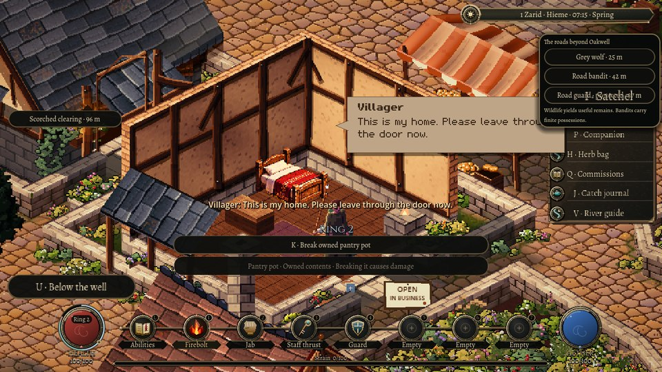
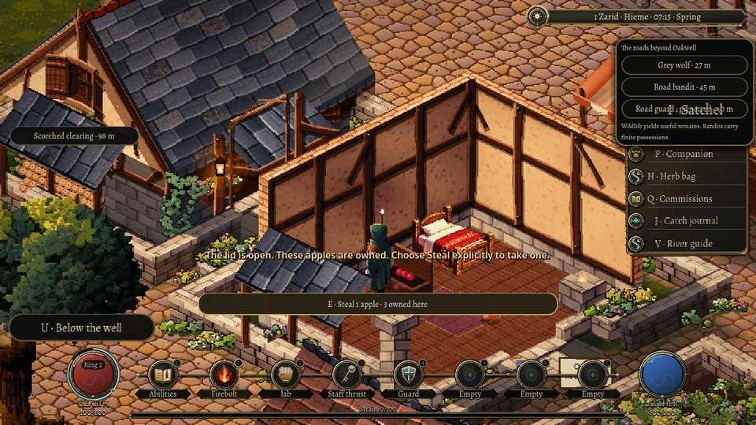
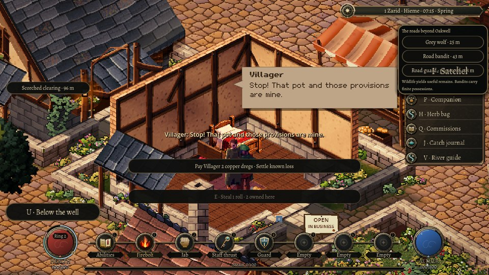

Someone lives here
3 November 2026
One Oakwell household now has a reason to care when you walk through its door, open its chest or break its provisions.
A house becomes more interesting when the person living there has something to say about your visit. This review build begins with one of Oakwell's existing residents and her actual cottage, reached through the same doorway you can already walk through.
There is a private chest containing three apples and an earthenware pantry pot holding two rolls. Small possessions, but they belong to someone.
A chance to leave
If a resident notices you entering the private room, you receive a clear warning and time to leave through the door. Leaving ends that immediate warning. No stolen goods or fight appear merely because you crossed a threshold.
Staying after the warning, or repeatedly returning after being recognised, earns a firmer response. Recognition matters: an anonymous visitor cannot accumulate a secret repeat-offender record in someone's mind.

Opening is a choice. Taking is another.
The chest first offers inspection. Opening its lid reveals the apples and a separately labelled Steal action. Keyboard, mouse and touch all make that choice explicit. Holding down an old inspection click while the lid opens cannot quietly turn its release into theft.
The pantry pot can be broken. Its shards and provisions stay in the cottage; collecting a roll is another deliberate action. A full satchel leaves the food where it is. Repeated input cannot produce more apples, rolls or broken pots.

What the resident knows
The owner can object to damage or theft she actually witnesses. Her sight depends on where she is, where she is looking and the walls between you. Being elsewhere in Oakwell does not tell her what happened at home.
An unnoticed theft can succeed. Later, when she reaches the chest and finds food missing, she can discover the loss without discovering the thief. The player standing nearby does not become guilty by proximity.
For a witnessed loss, a visible compensation offer transfers real coins from your purse to hers. Paying settles the known loss once. She still remembers the incident, and her conversation reflects whether you have paid. An unidentified loss produces no bill for the player.

Coming back preserves the consequence
The open lid, broken pottery, remaining food, carried items, warnings and witness memory are saved together. Continuing keeps the same household history. Older characters gain the new household state through a versioned migration while retaining their existing belongings and progress.
This is the first bounded encounter in a larger property and crime design. Sound propagation and waking sleepers, real locks, a placed sound-suppression rune, physical reports to guards and pursuit remain further stages. The current encounter proves private space, deliberate taking and responses grounded in what a resident can know.
The recorded checks use controlled resident positions and a fixed clock to make the comparison reproducible in the running town. Human playtesting still needs to establish whether the warning, ownership and consequences are clear without an explanation beside them.